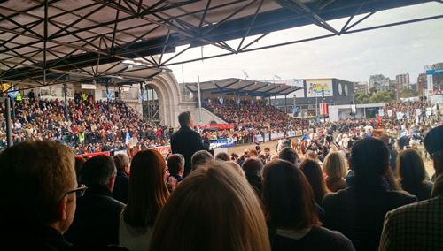

Real Chubut - Agencia de Noticias


Arcioni participó de la inauguración oficial de la 130º Exposición Rural de Buenos Aires
La ceremonia fue encabezada por el presidente de la Nación, Mauricio Macri.
Asistió en representación del gobernador Mario Das Neves. El vicegobernador fue acompañado por el ministro de la Producción, Hernán Alonso. El presidente de la Sociedad Rural, Luis Miguel Etchevehere, durante el acto central, destacó la participación de Chubut en la feria.
El vicegobernador del Chubut, Mariano Arcioni, participó este sábado de la inauguración oficial de la Exposición Rural de Palermo, en su edición número 130. La ceremonia fue encabezada por el presidente de la Nación, Mauricio Macri.
La participación de Chubut en la Exposición de Ganadería, Agricultura e Industria Internacional fue destacada y valorada por las autoridades de la Sociedad Rural Argentina.
Luego del acto, el vicegobernador Mariano Arcioni, quien concurrió acompañado por el ministro de la Producción chubutense, Hernán Alonso, señaló que "estamos muy contentos de estar acompañando y escuchando los discursos de una actividad tan importante para el país, la región y la provincia, tanto del presidente de la Nación, Mauricio Macri, como del titular de la Sociedad Rural, Luis Miguel Etchevehere”.
“Fueron dos discursos muy fuertes, reconociendo sobre todas las cosas los beneficios que han llegado al campo a través de Nación".
RECORRIDA POR EL STAND DE CHUBUT
El vicegobernador aprovechó la ocasión del acto oficial de la Rural para visitar el stand de Chubut en la exposición, junto a Alonso y allí manifestó que “es importante el contacto con los productores, charlar con ellos y que nos cuenten sus experiencias”.
“Ellos han venido a exponer y están muy contentos, porque fueron semanas de mucho éxito según me dijeron", remarcó.
Asimismo, el vicegobernador destacó que "se trata de un stand premiado por la Sociedad Rural y por el público que se acerca, incluso me comentaban productores que se han quedado sin mercadería, han vendido todo#.
Recalcó que “es muy importante acercar lo que es Chubut y que nos sigan conociendo".
En este marco expresó que "los productores locales están muy agradecidos por el acompañamiento que han tenido de la provincia, algo en lo que siempre hace hincapié el gobernador Mario Das Neves, tenemos productores de todas partes de Chubut".

IMPORTANCIA DE LA PRODUCCIÓN
En la oportunidad el ministro de la Producción, Hernán Alonso, resaltó que "ayer estuvimos recorriendo el stand y hoy nuevamente lo visitamos pero con el vicegobernador, una presencia importantísima para la provincia, para el stand, y los productores se mostraron muy contentos con la atención que el Gobierno Provincial ha tenido para con ellos".
"Hoy teníamos previsto que nos acompañe también el ministro de Agroindustria de la Nación, Ricardo Buryaile, y por cuestiones de agenda no se pudo acercar pero se comprometió a visitar la provincia en septiembre donde podrá degustar nuestros productos", anunció Alonso.
Sobre las palabras del presidente de la Sociedad Rural, Luis Miguel Etchevehere, durante el acto central, destacando la participación de Chubut en la feria, Alonso recalcó que "ello habla de la importancia que tiene la producción y el rol que está dándole el gobernador Mario Das Neves al sector en la provincia".

RESPALDO A LOS PRODUCTORES
Mientras que el subsecretario de Desarrollo Agropecuario y Valor Agregado, Pablo Muñoz, resaltó la importancia de "respaldar a los productores que desde el 16 de julio están aquí en el stand mostrando qué es Chubut, qué se hace en Chubut, cómo se produce en Chubut y por sobre todo con la calidad con que se produce en nuestra provincia".
"Es importante no sólo haberles brindado un espacio para mostrase, promocionarse, y comercializar sino que tienen la posibilidad de conectarse con muchas comerciantes y empresarios” señaló y agregó que “les ha ido muy bien, hay productores que han recibido refuerzos de mercadería, lo que nos dice que uno no se equivoca cuando los convoca, cuando los hace parte y realmente son oportunidades de negocios para ellos".
"Ese es el rol de Chubut: acompañar, potenciar este tipo de acciones, como dice el gobernador Das Neves, estando al lado de cada chubutense y dándoles las oportunidades que se merecen", cerró.
EL AGRADECIMIENTO DE LOS PRODUCTORES
El productor de los "Vinos Artesanales Rincón de los Leones" de Paso del Sapo, Juan Giacomino, valoró que "esta visita de los funcionarios es redondear nuestra participación acá, el broche de oro”.
“Buenos Aires es la atracción de muchísima gente y que cada pequeño o mediano productor pueda ofrecer sus productos con sus valores y su esencia, y este contacto humano que se genera solamente acá es muy importantes. Chubut está dando grandes pasos y eso se nota".
Para Mauro Giannandrea de "Memorable" de Trelew "esta es la feria más importante del país y clave para nosotros porque nos ayuda a promocionar el producto".
"Sin la Provincia no estaríamos presentes acá, por lo que su apoyo en estas acciones es muy significativo", indicó.
Maricel de "Alfajores Aiwen" de Lago Puelo, también resaltó que "es súper importante la presencia de los funcionarios en el stand, su interés por los productores y este apoyo fundamental", y contó que "nos quedamos sin stock superando todas las expectativas por la aceptación del público".
Finalmente Francisco Trotta de "Lácteos Chubut" de Trevelin, señaló que "fueron muy interesantes los contactos que se generaron estos días y es lindo que nos tengan en cuenta y vean lo que estamos produciendo en la provincia".
PUBLICIDAD